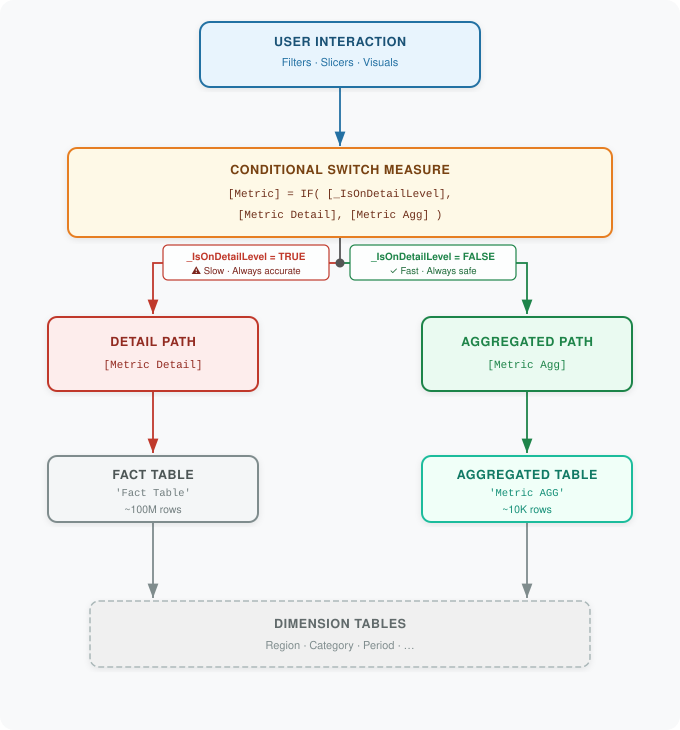

Overview
What is This Pattern?
The Aggregated Table Performance Optimization Pattern is a DAX design pattern that improves query performance in Power BI and Analysis Services tabular models by routing calculations through a pre-aggregated table when safe to do so.
The pattern implements a dual-path calculation strategy: when a user's filter context is compatible with a pre-aggregated table, the query reads from that smaller table instead of scanning the full fact table. An automatic detection measure examines the current filter context on every query and selects the fastest path that still produces accurate results. When there is any doubt about accuracy, the pattern falls back to the fact table.
- Detail Path - queries the fact table directly. Always accurate, but can be slow on large datasets.
- Aggregated Path - reads from a pre-computed Aggregated Summary Table (AGG) that contains summarized data at a fixed granularity. Significantly faster, but only valid for specific dimension combinations.
Why Was This Pattern Developed?
Traditional Power BI aggregations work well for simple SUM or COUNT operations, but they break down when your business logic involves multiple calculation steps, conditional logic, or custom hierarchical aggregations - for example, a weighted average fulfillment factor that must roll up correctly from store → country → global. Standard aggregation tables cannot pre-compute these results because the aggregation itself is part of the formula.
This pattern was built for exactly that scenario. It applies in enterprise BI environments where:
- Your fact table contains tens or hundreds of millions of rows
- Users drill through hierarchies (global → region → country → store) on the same KPI
- The same complex calculation is used at multiple aggregation levels
- Performance at aggregated levels is unacceptably slow (>3 seconds)
Architecture
High-Level Architecture
The pattern has five main components:

Component Descriptions
User Interaction Layer
Filters, slicers, and visuals that the user interacts with. Each selection creates a filter context that the detection measure evaluates on every query.
Conditional Switch Measure
The measure exposed in visuals. It contains a single IF statement that delegates to the Detail or Aggregated version of each measure based on what [_IsOnDetailLevel] returns. Keeping this measure thin isolates all routing logic in one place, making future maintenance straightforward.
Context Detection Logic ([_IsOnDetailLevel])
The measure that determines which path is safe. It evaluates the filter context against a set of rules and returns TRUE (use Detail Path) or FALSE (Aggregated Path is safe). See the Data Flow section for the full logic.
Detail Path Measures
Query the fact table directly. They work with any dimension combination but scan potentially hundreds of millions of rows.
Aggregated Path Measures
Query the pre-computed AGG table, which contains only thousands of rows. Extremely fast, but only correct when the filter context is limited to the dimensions that were used when building the AGG table.
Data Layer
- Fact Table: your primary transactional data
- AGG Table: the pre-aggregated summary table populated during model refresh
- Dimension Tables: Region, Category, Product, etc.
Data Flow
Step-by-step walkthrough of a single query.
Step 1 - User applies filters
The user selects, for example:
- Region = North
- Category = Electronics
- Period = 2024-Q1
Step 2 - DAX evaluation begins
Power BI evaluates the Conditional Switch Measure in the current filter context.
Step 3 - Context detection
[_IsOnDetailLevel] runs the following checks in order:
-- Check 1: parameter override
IF [_ForceDetailCalculations] THEN
-> Return TRUE (Detail Path)
-- Check 2: any detail-level dimension is filtered
IF ISFILTERED('Location') THEN
-> Return TRUE (Detail Path)
-- Check 3: no aggregation dimensions are filtered
IF NOT (
ISFILTERED('Region') OR
ISFILTERED('Category') OR
...
) THEN
-> Return TRUE (Detail Path -- no agg dimensions active)
-- All checks passed: AGG path is safe
-> Return FALSE (Aggregated Path)Implementation note: The pseudo-code above uses plain-English syntax for readability. The full DAX implementation is in the Context Detection Logic section below.
Step 4A - Detail Path execution (if [_IsOnDetailLevel] = TRUE)
[Metric Detail] evaluates against the full Fact Table in the current filter context. This is standard DAX execution - every row that passes the filter is scanned, which guarantees accuracy but is potentially slow on large datasets.
Step 4B - Aggregated Path execution (if [_IsOnDetailLevel] = FALSE)
[Metric Agg] evaluates against Metric AGG, which holds pre-summed totals at the chosen granularity. Power BI scans thousands of rows instead of hundreds of millions, returning the result in a fraction of the time - with identical output to the Detail Path for the same filter context.
Step 5 - Result display
The final value is returned to the visual.
When Should You Use This Pattern?
Ideal Scenarios
- Large fact tables where complex calculations take >3 seconds at aggregated levels
- Hierarchical reporting where users drill from global → country → business unit
- Stable dimension structures where aggregation dimensions don't change frequently
- Predictable usage patterns where most users view aggregated data, not transaction details
- Complex business logic (weighted averages, fulfillment factors, compliance percentages) that standard Power BI aggregations cannot pre-compute
Not Recommended For
- Small datasets where query performance is already acceptable
- Rapidly changing dimension structures that would require frequent AGG table rebuilds
- Real-time dashboards where pre-aggregation introduces unacceptable data latency
- Simple SUM or COUNT aggregations - use standard Power BI aggregation tables instead
- Models requiring DirectQuery without an Import-mode layer
Expected Benefits
When properly implemented, this pattern typically delivers:
| Metric | Observed Range |
|---|---|
| Performance improvement on aggregated queries | 70–90% |
| Performance impact on detail-level queries | None |
| Model size increase | 5–15% |
| Additional refresh time | 2–10 minutes |
These figures are observed ranges from production implementations. Actual results depend on model design, hardware, data distribution, and the complexity of your business logic. Benchmark your specific model before committing to this pattern.
Trade-offs to budget for:
- Increased development complexity - dual-path measures require careful implementation and testing
- Ongoing maintenance when adding new dimensions or metrics to the AGG table
- Data latency at the AGG granularity (AGG data is as fresh as the last refresh, not real-time)
Context Detection Logic
[_IsOnDetailLevel] is the measure that drives every routing decision. It evaluates five conditions in order and returns TRUE (use the Detail Path) or FALSE (use the Aggregated Path). The failsafe default is TRUE - when in doubt, the measure falls back to the fact table rather than risking an incorrect result from the AGG table.
Note: The MEASURE 'Table'[Name] = prefix throughout this guide is Tabular Editor and DAX Query view in PowerBI Desktop syntax.
MEASURE 'Measure'[_IsOnDetailLevel] =
// STEP 0: Manual override (highest priority)
IF(
'_ForceDetailCalculations'[_ForceDetailCalculations Value],
TRUE, -- Parameter forces Detail path; skip all other checks
// STEP 1: Check for detail-level dimension filters
VAR _HasDetailFilters =
ISFILTERED('Location')
-- Add any other detail-level dimensions specific to your model
// STEP 2: Check for aggregation-level dimension filters
VAR _IsAtAggregationLevel =
ISFILTERED('Region') ||
ISFILTERED('Period')
-- Add any other dimensions included in your AGG table
// STEP 3: Confirm the AGG table contains data
VAR _HasAGGData = [_Agg_fct] > 0
// STEP 4: Combine conditions
VAR _UseAggregated =
NOT _HasDetailFilters && -- No detail dimensions in context
_IsAtAggregationLevel && -- At least one AGG dimension active
_HasAGGData -- AGG table is populated
// STEP 5: Return decision (TRUE = Detail, FALSE = AGG)
RETURN
NOT _UseAggregated
)Key implementation notes:
'_ForceDetailCalculations'is a table created from a semantic model parameter. That way the semantic model has an 'off' switch that allows to force the detailed path.[_Agg_fct]returns the row count of the AGG table in the current filter context. When it returnsBLANKor0,_HasAGGDataisFALSEand the pattern falls back to the Detail Path.- Extend Steps 1 and 2 by adding more
ISFILTERED()calls as your model grows. Step 1 lists dimensions whose presence forces the Detail path; Step 2 lists dimensions that are pre-computed in your AGG table. - The
RETURN NOT _UseAggregatedinversion is intentional - the measure is named from the Detail path perspective, soTRUEmeans "we are at detail level" (use Detail Path).
Implementation Guide
The implementation has seven steps. Work through them in order - each builds on the previous one.
Step 1 - Create the Semantic model parameter and expose as table in the datamodel
[_ForceDetailCalculations] is a toggle that forces all measures onto the Detail Path . Create it in Power BI Desktop via PowerQuery → Manage Parameters > New Parameter
Then create a referenced table from the parameters and expose that to PowerBI Desktop. Set the parameter to 1 to force the Detail Path on every query, or leave it at 0 for normal operation.
Step 2 - Create the AGG table
The AGG table stores pre-computed component totals at your chosen aggregation granularity. It must include:
- Every key column used in
_IsAtAggregationLevel(the aggregation dimensions) - Every numeric column that your Aggregated Path measures will read
Add a new Calculated Table in Power BI Desktop:
Metric AGG =
SUMMARIZECOLUMNS(
'Region'[Region Key],
'Category'[Category Key],
'Period'[Period Key],
"Numerator", SUM('Fact Table'[Numerator]),
"Denominator", SUM('Fact Table'[Denominator])
)After creating the table, open Model view and draw relationships from Metric AGG to each dimension table on its key column - the same way you would relate any fact table.
If the model is too large for a calculated table, populate the AGG table from a pre-aggregated SQL view or a Power Query dataflow instead. The DAX measures are identical either way - only the refresh mechanism differs.
Step 3 - Create the AGG data check helper
This single-line measure tells [_IsOnDetailLevel] whether the AGG table contains any rows in the current filter context:
MEASURE 'Measure'[_Agg_fct] =
COUNTROWS('Metric AGG')When COUNTROWS returns BLANK or 0, _HasAGGData in [_IsOnDetailLevel] becomes FALSE, and the pattern falls back to the Detail Path. This protects against a scenario where the AGG table fails to populate during refresh.
Step 4 - Create [_IsOnDetailLevel]
Paste the measure from the Context Detection Logic section above. Then extend the two ISFILTERED blocks to match your model:
_HasDetailFilters- add a line for every dimension that, when filtered, means the user is viewing data at a granularity finer than your AGG table (e.g., individual stores, SKUs, transactions)._IsAtAggregationLevel- add a line for every dimension column that exists in the AGG table.
Step 5 - Create the Detail Path measures
Detail Path measures query the fact table directly. Write them as standard measures with no AGG awareness:
MEASURE 'Measure'[Metric Detail] =
DIVIDE(
SUM('Fact Table'[Numerator]),
SUM('Fact Table'[Denominator])
)These are your existing business measures, unchanged. If you already have them, you can reuse them as-is - just reference them in the Switch Measure in Step 7.
Step 6 - Create the Aggregated Path measures
Aggregated Path measures read the same logical columns from the AGG table instead of the fact table. The formula shape mirrors the Detail measure exactly - only the table reference changes:
MEASURE 'Measure'[Metric Agg] =
DIVIDE(
SUM('Metric AGG'[Numerator]),
SUM('Metric AGG'[Denominator])
)Because the AGG table stores pre-summed totals, SUM here scans thousands of rows rather than hundreds of millions - that's where the performance gain comes from.
Step 7 - Create the Conditional Switch Measure
The Switch Measure is the only measure report authors should place in visuals. It delegates to one of the two path measures based on [_IsOnDetailLevel]:
MEASURE 'Measure'[Metric] =
IF(
[_IsOnDetailLevel],
[Metric Detail],
[Metric Agg]
)Keep this measure thin. Any business logic placed here executes on every query regardless of which path is active, bypassing the optimization entirely.
Naming convention: Use the plain name (Metric) for the Switch Measure and suffix the internal measures with Detail and Agg. Hide the Detail and Agg variants from report view so authors can't place them directly in visuals by mistake.
Testing & Validation
Before releasing any dual-path measure to production, verify that both paths return identical results across every dimension combination. A silent discrepancy in the Aggregated Path will corrupt reports for every user who triggers it - and because the switching is automatic, it can be very difficult to spot after the fact.
Step 1 - Run a path comparison
Create a temporary comparison measure that evaluates both paths simultaneously and flags any divergence:
MEASURE 'Measure'[_Path Comparison] =
VAR _Detail = [Metric Detail]
VAR _Agg = [Metric Agg]
VAR _Diff = ABS( _Detail - _Agg )
RETURN
IF( _Diff > 0.0001, "MISMATCH: " & FORMAT(_Diff, "0.0000"), "Match" )Drop this into a table visual alongside [Metric Detail] and [Metric Agg], then slice by every AGG dimension (Region, Category, Period). Every row must show ✓ Match. Any ⚠ MISMATCH row tells you exactly which dimension combination diverges - start your investigation there.
Delete this measure before publishing.
Step 2 - Verify path switching
Confirm that [_IsOnDetailLevel] routes correctly for each expected context. Create a second temporary measure:
MEASURE 'Measure'[_Active Path] =
IF( [_IsOnDetailLevel], "Detail", "Aggregated" )Add it to a table visual and step through these cases manually:
| Filter context | Expected |
|---|---|
| No filters | Detail - no AGG dimension is active |
| Region only | Aggregated |
| Region + Category | Aggregated |
| Location | Detail - detail-level dimension present |
| Region + Location | Detail - detail overrides AGG |
_ForceDetailCalculations slicer = 1 | Detail - parameter override |
If any row shows the wrong path, see Troubleshooting below.
Delete this measure before publishing.
Step 3 - Full cross join in DAX Studio
For a rigorous final check, use DAX Studio to query both paths across the complete dimension space and surface any hidden mismatches:
EVALUATE
SUMMARIZECOLUMNS(
'Region'[Region Name],
'Category'[Category Name],
'Period'[Year Month],
"Detail", [Metric Detail],
"Aggregated", [Metric Agg],
"Difference", ABS( [Metric Detail] - [Metric Agg] )
)
ORDER BY [Difference] DESCAny rows with a non-zero Difference at the top of the result indicate a granularity or relationship problem. Review those rows against the AGG table contents to determine which component column is misaligned.
Troubleshooting
AGG path returns wrong results
Symptom: [_Path Comparison] shows mismatches at certain dimension combinations.
Missing relationship. Open Model view and confirm every key column in Metric AGG has an active relationship to its dimension table. A missing or inactive relationship causes the AGG table to return totals without the expected filter, producing values that are too high.
Wrong AGG granularity. The AGG table was built at a coarser level than the current filter. If the AGG table is at Category level but the user filters by Sub-Category, the AGG rows won't filter down correctly. Either add Sub-Category to the AGG table's SUMMARIZECOLUMNS, or add ISFILTERED('Sub-Category') to _HasDetailFilters in [_IsOnDetailLevel] to push those contexts back to the Detail Path.
Pre-aggregated ratio. The AGG table stores a pre-calculated ratio (e.g., Ratio = 0.87) rather than its components (Numerator, Denominator). When the Aggregated Path sums this column across rows, the result is an average of percentages - not the correct weighted ratio. Store components only; calculate ratios at read time.
Detection measure always uses the Detail Path
Symptom: [_Active Path] shows "Detail" in every context, even when you expect "Aggregated." Performance is unchanged from not having the pattern at all.
ISFILTERED table name mismatch. Table names in DAX are case-sensitive and must match the exact name in the Fields pane, including spaces. Open [_IsOnDetailLevel] and check each ISFILTERED('...') call. A common mistake is writing 'SalesRegion' when the table is named 'Sales Region' (note the space).
_ForceDetailCalculations stuck at 1. The parameter is set to 1 forcing detail path. Reset it to 0.
AGG table is empty. [_Agg_fct] returns BLANK or 0, so _HasAGGData is FALSE and _UseAggregated never becomes TRUE. In DAX Studio, run EVALUATE 'Metric AGG' and confirm it returns rows. If the table is empty, the calculated table may have failed to refresh - check the refresh history in Power BI Service.
AGG path returns BLANK
Symptom: The Switch Measure returns BLANK at levels where the Aggregated Path should be active.
The AGG table has data, but no rows survive the current filter context. This almost always means the AGG table is missing a relationship to a dimension that a slicer is filtering. In Model view, verify that every dimension used in any slicer on the report has an active relationship to Metric AGG - not just to the fact table. The AGG table and the fact table need parallel relationship sets.
Performance improvement is lower than expected
Symptom: Queries are faster but not by the expected 70–90%.
AGG table is too large. If the aggregation granularity is too fine, the AGG table can approach the fact table in row count and the read advantage shrinks. Aim for a table at least two orders of magnitude smaller than the fact table (e.g., 100K rows vs. 100M rows). If the AGG table is above ~1M rows, coarsen the granularity or remove low-cardinality dimensions that are not driving the performance problem.
The bottleneck is not the calculation. Open Performance Analyzer in Power BI Desktop and capture query timings. If most of the elapsed time is in the "Other" category - rendering, network transfer, or visual data reduction - the DAX execution time is already acceptable and this pattern will not help. Investigate the visual or data model layer instead.
Conclusion & Next Steps
The Aggregated Table Performance Optimization Pattern addresses a narrow but common problem: complex DAX calculations that are too expensive to run against a full fact table at aggregated levels, yet too intricate for standard Power BI aggregation tables to handle. The dual-path approach keeps everything in DAX - no DirectQuery aggregations, no external caching - which means it works with any Import-mode data source and is fully maintainable by any developer who knows DAX.
Recommended rollout sequence:
- Start with one slow measure. Pick the single KPI causing the most pain at aggregated levels. Investigate the most common dimension used by users related to the measre. Implement the full pattern for that measure, run the validation suite, and ship it. Don't try to convert an entire model in one pass.
- Benchmark before and after. Capture DAX Studio server timings before building the AGG table so you have a baseline. If the improvement is below 50% after implementation, work through the troubleshooting checklist before expanding to more measures.
- Add metrics incrementally. Each new metric needs its own Detail and Aggregated path measures and its component columns in the AGG table. Add one at a time and run the path comparison test before moving to the next.
- Document your dimension lists. Add a comment block at the top of
[_IsOnDetailLevel]listing which dimensions are in_HasDetailFilters, which are in_IsAtAggregationLevel, and why each is classified that way. When someone inherits the model in six months, this is the context that's hardest to reconstruct from code alone.